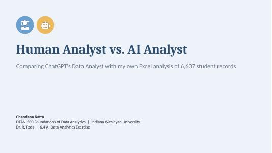

Hi, I'm Chandana Katta.
A senior software engineer with 8+ years of building reliable enterprise systems, now bringing that same discipline to AI and data.
About Me
I'm a senior Java developer with more than 8 years of experience building backend services for large companies in financial services, retail analytics, life sciences, and wealth management.
My work includes event-driven systems with Kafka, secure REST APIs, data pipelines between Snowflake, cloud storage, and PostgreSQL, and zero-downtime deployments on AWS and Azure. I've also helped my team use AI coding tools well, not just quickly.
I hold a Master's in Computer Science from the University of Central Missouri, and I'm now a graduate student at Indiana Wesleyan University, studying machine learning and data analytics so I can build AI into the kind of systems I already know how to run.
My Value Proposition
I bring an engineer's discipline to AI.
Years of shipping production software taught me what makes a system trustworthy: clear rules, real tests, secure data, and safe rollouts. I apply the same habits to AI. I check the data first, try to break my own AI tools, and verify AI-generated results before anyone acts on them.
I explain the results in plain language, so people without a technical background can use them too.
Skills
Featured Work

Visa Guide USA
A Gemini-based AI assistant that explains US student and work visas in plain English, with safety rules that were tested and fixed.
View project →
Human vs. AI Analyst
Compared ChatGPT's Data Analyst with my own Excel analysis of 6,607 student records.
View project →